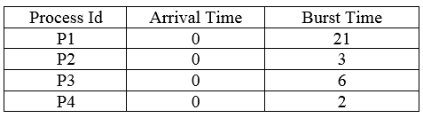
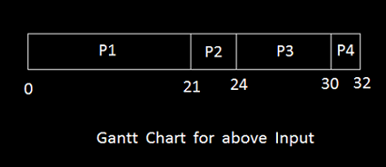

FCFS Scheduling
First Come First Serve
Discover
The feature of fcfs algorithm is that it schedules the job according to their arrival time. The job which comes first in the ready queue will be executed first.
But what if the arrival time of all the jobs are same?
¤ Then the job having less Process Id will be executed first.
As we have done here in the example shown along with Input and Gantt Chart drawn corresponding to it.
Input

